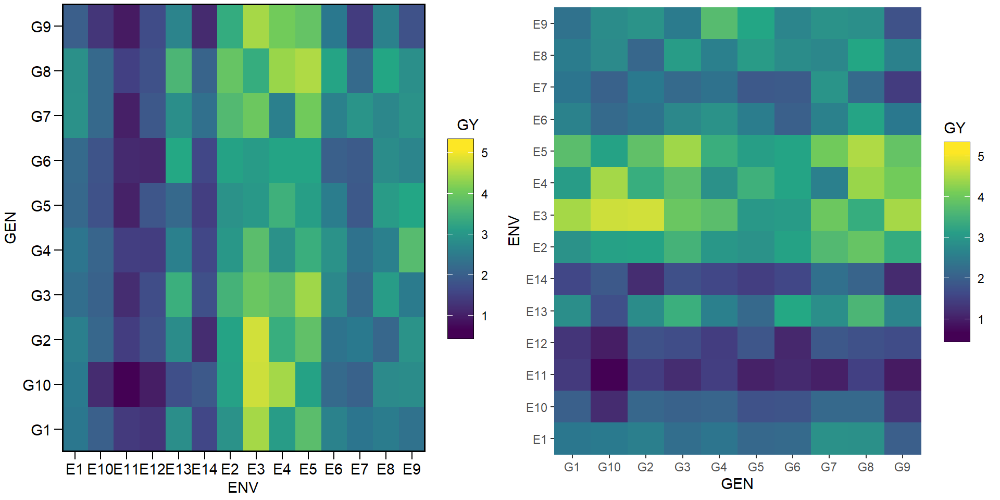
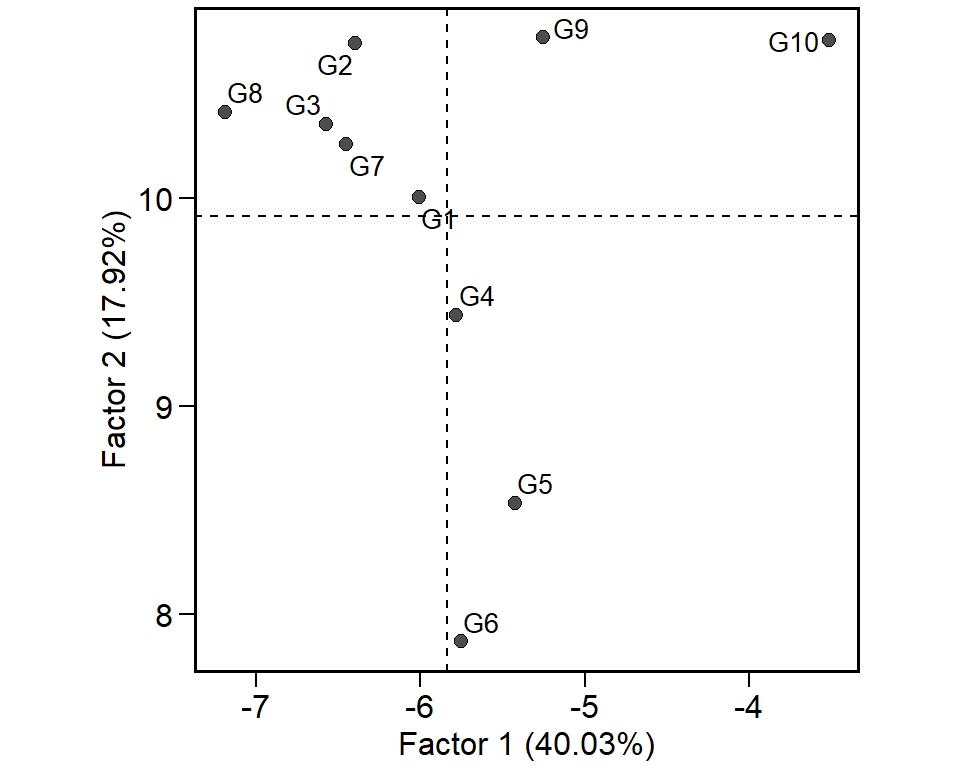

Parametric and non-parametric stability statistics
Source:vignettes/vignettes_stability.Rmd
vignettes_stability.RmdGetting started
In this section, we will use the data in data_ge and data_ge2. For more information see ?data_ge and ?data_ge2, respectively. Other data sets can be used provided that the following columns are in the data_ge: environment, genotype, block/replicate and response variable(s).
library(metan)
library(cowplot) # used to arrange the graphics
library(kableExtra) # Used to make the tables
library(tidyverse) # for data manipulation and pipe %>%
# Function to make HTML tables
print_table = function(table){
kable(table, "html", digits = 3) %>%
kable_styling(bootstrap_options = c("striped", "hover", "condensed", "responsive"), font_size = 12)
}
str(data_ge)Classes 'tbl_df', 'tbl' and 'data.frame': 420 obs. of 5 variables:
$ ENV: Factor w/ 14 levels "E1","E10","E11",..: 1 1 1 1 1 1 1 1 1 1 ...
$ GEN: Factor w/ 10 levels "G1","G10","G2",..: 1 1 1 3 3 3 4 4 4 5 ...
$ REP: Factor w/ 3 levels "1","2","3": 1 2 3 1 2 3 1 2 3 1 ...
$ GY : num 2.17 2.5 2.43 3.21 2.93 ...
$ HM : num 44.9 46.9 47.8 45.2 45.3 ...Graphic visualization of the interaction
The function ge_plot() may be used to visualize the genotype’s performance across the environments. The black diamond shows the mean for each environment.
p1 = ge_plot(data_ge, ENV, GEN, GY)
p2 = ge_plot(data_ge, ENV, GEN, GY) + theme_grey() + coord_flip()
plot_grid(p1, p2)
Clustering tester locations
The function ge_cluster() computes a cluster analysis for grouping environments based on its similarities using an Euclidean distance based on standardized data. Line means are divided by the phenotypic standard error of the relevant environment after its mean has been subtracted. By standardizing the data each environment will have a mean of zero and unit variance, and the effect of variability in phenotypic variance (as well as the mean) should be reduced (Fox and Rosielle 1982).

Joint regression analysis
Eberhart and Russell (1966) popularized the regression-based stability analysis. In these procedures, the adaptability and stability analysis is performed by means of adjustments of regression equations where the dependent variable is predicted as a function of an environmental index, according to the following model:
\[
\mathop Y\nolimits_{ij} = {\beta _{0i}} + {\beta _{1i}}{I_j} + {\delta _{ij}} + {\bar \varepsilon _{ij}}
\] where \({\beta _{0i}}\) is the grand mean of the genotype i (i = 1, 2, …, I); \({\beta _{1i}}\) is the linear response (slope) of the genotype i to the environmental index; Ij is the environmental index (j = 1, 2, …, e), where \({I_j} = [(y_{.j}/g)- (y_{..}/ge)]\), \({\delta _{ij}}\) is the deviation from the regression, and \({\bar \varepsilon _{ij}}\) is the experimental error. The model is fitted with the function ge_reg(). The S3 methods plot() and summary() may be used to explore the fitted model.
| SV | Df | Sum Sq | Mean Sq | F value | Pr(>F) |
|---|---|---|---|---|---|
| Total | 139 | 323.788 | 2.329 | NA | NA |
| GEN | 9 | 12.995 | 1.444 | 6.277 | 0.000 |
| ENV + (GEN x ENV) | 130 | 310.793 | 2.391 | NA | NA |
| ENV (linear) | 1 | 279.574 | 279.574 | NA | NA |
| GEN x ENV (linear) | 9 | 3.615 | 0.402 | 1.746 | 0.086 |
| Pooled deviation | 120 | 27.605 | 0.230 | NA | NA |
| G1 | 12 | 1.109 | 0.092 | 1.062 | 0.392 |
| G10 | 12 | 7.542 | 0.629 | 7.222 | 0.000 |
| G2 | 12 | 2.949 | 0.246 | 2.824 | 0.001 |
| G3 | 12 | 0.699 | 0.058 | 0.669 | 0.781 |
| G4 | 12 | 2.234 | 0.186 | 2.139 | 0.015 |
| G5 | 12 | 1.485 | 0.124 | 1.422 | 0.155 |
| G6 | 12 | 1.270 | 0.106 | 1.216 | 0.271 |
| G7 | 12 | 3.245 | 0.270 | 3.107 | 0.000 |
| G8 | 12 | 2.536 | 0.211 | 2.428 | 0.005 |
| G9 | 12 | 4.536 | 0.378 | 4.343 | 0.000 |
| Pooled error | 280 | 24.367 | 0.087 | NA | NA |
| GEN | Mean | bij | sdij | RMSE | R2 |
|---|---|---|---|---|---|
| G1 | 2.604 | 1.0628319 | -0.001423986 | 0.162 | 0.966 |
| G10 | 2.471 | 1.1215822 | 0.177270797 | 0.424 | 0.823 |
| G2 | 2.744 | 1.0544492 | 0.049689159 | 0.265 | 0.913 |
| G3 | 2.955 | 1.0306149 | -0.012821559 | 0.129 | 0.977 |
| G4 | 2.642 | 0.9374441 | 0.029825652 | 0.231 | 0.917 |
| G5 | 2.537 | 0.8866880 | 0.009021547 | 0.188 | 0.937 |
| G6 | 2.534 | 0.8614676 | 0.003044270 | 0.174 | 0.942 |
| G7 | 2.741 | 0.8188669 | 0.057909650 | 0.278 | 0.852 |
| G8 | 3.004 | 1.0344011 | 0.038207580 | 0.246 | 0.922 |
| G9 | 2.510 | 1.1916542 | 0.093762916 | 0.329 | 0.897 |
Genotypic confidence index
Annicchiarico (1992) proposed a stability method in which the stability parameter is measured by the superiority of the genotype in relation to the average of each environment, according to the following model:
\[ {Z_{ij}} = \frac{{{Y_{ij}}}}{{{{\bar Y}_{.j}}}} \times 100 \] The genotypic confidence index of the genotype i (\(W_i\)) is then estimated as follows:
\[
W_i = Z_{i.}/e - \alpha \times sd(Z_{i.})
\] Where \(\alpha\) is the quantile of the standard normal distribution at a given probability error (\(\alpha \approx 1.64\) at 0.05). The method is implemented using the function Annicchiarico(). The confidence index is estimated considering all environment, favorable environments (positive index) and unfavorable environments (negative index), as follows:
Environment classification
df = ann5$GY
kable(df$environments, "html", digits = 3) %>%
row_spec(which(df$environments$index <0), bold = T, color = "white", background = "red") %>%
row_spec(which(df$environments$index >0), bold = T, color = "white", background = "green") %>%
kable_styling(bootstrap_options = c("striped", "hover", "condensed", "responsive"), font_size = 12)| ENV | Mean | index | class |
|---|---|---|---|
| E1 | 2.521 | -0.154 | unfavorable |
| E10 | 2.175 | -0.499 | unfavorable |
| E11 | 1.368 | -1.306 | unfavorable |
| E12 | 1.609 | -1.066 | unfavorable |
| E13 | 2.910 | 0.235 | favorable |
| E14 | 1.782 | -0.892 | unfavorable |
| E2 | 3.180 | 0.506 | favorable |
| E3 | 4.064 | 1.390 | favorable |
| E4 | 3.675 | 1.001 | favorable |
| E5 | 3.910 | 1.236 | favorable |
| E6 | 2.663 | -0.011 | unfavorable |
| E7 | 1.989 | -0.685 | unfavorable |
| E8 | 2.536 | -0.138 | unfavorable |
| E9 | 3.057 | 0.382 | favorable |
Index computed with all environments
kable(df$general, "html", digits = 3) %>%
row_spec(2, bold = T, color = "white", background = "red") %>%
row_spec(4, bold = T, color = "white", background = "green") %>%
kable_styling(bootstrap_options = c("striped", "hover", "condensed", "responsive"), font_size = 12)| Genotype | Mean | Mean_rp | Sd_rp | Wi | rank |
|---|---|---|---|---|---|
| G1 | 2.604 | 96.490 | 7.380 | 84.350 | 4 |
| G10 | 2.471 | 90.251 | 18.853 | 59.241 | 10 |
| G2 | 2.744 | 102.625 | 12.054 | 82.797 | 7 |
| G3 | 2.955 | 111.071 | 4.589 | 103.522 | 1 |
| G4 | 2.642 | 99.126 | 8.027 | 85.924 | 3 |
| G5 | 2.537 | 95.452 | 7.742 | 82.717 | 8 |
| G6 | 2.534 | 95.511 | 7.609 | 82.995 | 6 |
| G7 | 2.741 | 104.507 | 12.543 | 83.876 | 5 |
| G8 | 3.004 | 113.397 | 8.875 | 98.799 | 2 |
| G9 | 2.510 | 91.571 | 13.814 | 68.849 | 9 |
Superiority index
The function superiority() implements the nonparametric method proposed by Lin and Binns (1988), which considers that a measure of cultivar general superiority for cultivar x location data is defined as the distance mean square between the cultivar’s response and the maximum response averaged over all locations, according to the following model.
\[ P_i = \sum\limits_{j = 1}^n{(y_{ij} - y_{.j})^2/(2n)} \] where n is the number of environments
Similar then the genotypic confidence index, the superiority index is calculated by all environments, favorable, and unfavorable environments.
super = superiority(data_ge, ENV, GEN, REP, GY)
kable(super$GY$index, "html", digits = 3) %>%
row_spec(2, bold = T, color = "white", background = "red") %>%
row_spec(4, bold = T, color = "white", background = "green") %>%
kable_styling(bootstrap_options = c("striped", "hover", "condensed", "responsive"), font_size = 12)| Genotypes | Pi_all | Or_a | Pi_favorable | Or_f | Pi_unfavorable | Or_u |
|---|---|---|---|---|---|---|
| G1 | 0.169 | 5 | 0.228 | 4 | 0.125 | 6 |
| G10 | 0.344 | 10 | 0.475 | 10 | 0.245 | 10 |
| G2 | 0.126 | 3 | 0.149 | 3 | 0.108 | 5 |
| G3 | 0.041 | 1 | 0.072 | 1 | 0.018 | 2 |
| G4 | 0.173 | 6 | 0.289 | 5 | 0.085 | 4 |
| G5 | 0.240 | 8 | 0.382 | 8 | 0.133 | 7 |
| G6 | 0.238 | 7 | 0.377 | 7 | 0.134 | 8 |
| G7 | 0.149 | 4 | 0.318 | 6 | 0.021 | 3 |
| G8 | 0.041 | 2 | 0.088 | 2 | 0.006 | 1 |
| G9 | 0.291 | 9 | 0.390 | 9 | 0.217 | 9 |
Environmental stratification
A method that combines stability analysis and environmental stratification using factor analysis was proposed by Murakami and Cruz (2004). This method is implemented with the function ge_factanal(), as follows:

| PCA | Eigenvalues | Variance | Cumul_var |
|---|---|---|---|
| PC1 | 5.604 | 40.029 | 40.029 |
| PC2 | 2.509 | 17.925 | 57.953 |
| PC3 | 2.406 | 17.187 | 75.140 |
| PC4 | 1.371 | 9.795 | 84.935 |
| PC5 | 1.127 | 8.049 | 92.984 |
| PC6 | 0.487 | 3.481 | 96.465 |
| PC7 | 0.303 | 2.164 | 98.629 |
| PC8 | 0.129 | 0.925 | 99.554 |
| PC9 | 0.062 | 0.446 | 100.000 |
| PC10 | 0.000 | 0.000 | 100.000 |
| PC11 | 0.000 | 0.000 | 100.000 |
| PC12 | 0.000 | 0.000 | 100.000 |
| PC13 | 0.000 | 0.000 | 100.000 |
| PC14 | 0.000 | 0.000 | 100.000 |
| Env | FA1 | FA2 | FA3 | FA4 | FA5 | Communality | Uniquenesses |
|---|---|---|---|---|---|---|---|
| E1 | -0.881 | 0.327 | 0.009 | -0.063 | 0.274 | 0.963 | 0.037 |
| E10 | -0.942 | -0.158 | -0.082 | 0.113 | 0.174 | 0.962 | 0.038 |
| E11 | -0.929 | -0.233 | -0.034 | -0.242 | 0.110 | 0.989 | 0.011 |
| E12 | -0.848 | 0.135 | 0.026 | 0.094 | 0.241 | 0.805 | 0.195 |
| E13 | -0.940 | 0.108 | -0.084 | -0.064 | -0.235 | 0.961 | 0.039 |
| E14 | -0.150 | -0.123 | -0.916 | -0.087 | 0.265 | 0.954 | 0.046 |
| E2 | -0.198 | -0.052 | -0.126 | -0.969 | 0.033 | 0.997 | 0.003 |
| E3 | -0.081 | 0.910 | 0.341 | -0.017 | -0.110 | 0.963 | 0.037 |
| E4 | 0.209 | 0.543 | -0.272 | -0.728 | -0.120 | 0.957 | 0.043 |
| E5 | -0.777 | 0.392 | -0.269 | -0.047 | -0.267 | 0.904 | 0.096 |
| E6 | -0.524 | 0.569 | -0.309 | -0.174 | -0.238 | 0.781 | 0.219 |
| E7 | -0.244 | 0.342 | -0.520 | 0.297 | 0.619 | 0.918 | 0.082 |
| E8 | 0.002 | -0.059 | -0.914 | -0.226 | -0.143 | 0.911 | 0.089 |
| E9 | -0.079 | -0.291 | -0.018 | -0.054 | 0.927 | 0.954 | 0.046 |
| Env | Factor | Mean | Min | Max | CV |
|---|---|---|---|---|---|
| E1 | FA1 | 2.521 | 1.974 | 2.902 | 13.304 |
| E10 | FA1 | 2.175 | 1.536 | 2.575 | 14.435 |
| E11 | FA1 | 1.368 | 0.899 | 1.683 | 16.392 |
| E12 | FA1 | 1.609 | 1.022 | 2.000 | 20.309 |
| E13 | FA1 | 2.910 | 1.831 | 3.520 | 16.760 |
| E5 | FA1 | 3.910 | 3.366 | 4.812 | 10.709 |
| E3 | FA2 | 4.064 | 3.435 | 4.569 | 8.223 |
| E6 | FA2 | 2.663 | 2.336 | 2.985 | 7.955 |
| E14 | FA3 | 1.782 | 1.427 | 2.060 | 11.705 |
| E8 | FA3 | 2.536 | 2.045 | 2.879 | 10.545 |
| E2 | FA4 | 3.180 | 2.613 | 3.608 | 8.253 |
| E4 | FA4 | 3.675 | 3.019 | 4.271 | 11.451 |
| E7 | FA5 | 1.989 | 1.393 | 2.551 | 16.850 |
| E9 | FA5 | 3.057 | 1.943 | 3.725 | 15.567 |
The easiest way to compute the above-mentioned stability indexes is by using the function ge_stats(). This function basically returns a summary of each method. If you are looking for more details from each method, like plot() and summary(), I suggest computing that methods using their own function.
Computing the indexes
If you want to export a summary of results, the simplest way is by using the function summary, as follows:
This comand will create a text file called ge_stats summary.txt in the current working directory.
Within-environment analysis of variance
The following table shows the results for the analysis of variance in each environment. Environment with a gray background had a significant genotype effect, considering 5% probability error.
kable(dat$individual, "html", digits = 3) %>%
row_spec(which(dat$individual$PRFG < 0.05), bold = T, color = "white", background = "gray80") %>%
kable_styling(bootstrap_options = c("striped", "hover", "condensed", "responsive"), font_size = 12)| ENV | MEAN | MSB | MSG | MSR | FCB | PRFB | FCG | PRFG | CV | h2 | AS |
|---|---|---|---|---|---|---|---|---|---|---|---|
| E1 | 2.521 | 0.065 | 0.337 | 0.144 | 0.453 | 0.643 | 2.343 | 0.059 | 15.055 | 0.573 | 0.757 |
| E10 | 2.175 | 0.654 | 0.296 | 0.027 | 24.508 | 0.000 | 11.090 | 0.000 | 7.508 | 0.910 | 0.954 |
| E11 | 1.368 | 0.377 | 0.151 | 0.105 | 3.594 | 0.049 | 1.438 | 0.244 | 23.680 | 0.304 | 0.552 |
| E12 | 1.609 | 0.092 | 0.320 | 0.054 | 1.717 | 0.208 | 5.982 | 0.001 | 14.382 | 0.833 | 0.913 |
| E13 | 2.910 | 0.077 | 0.713 | 0.099 | 0.772 | 0.477 | 7.179 | 0.000 | 10.834 | 0.861 | 0.928 |
| E14 | 1.782 | 0.104 | 0.131 | 0.075 | 1.374 | 0.278 | 1.732 | 0.153 | 15.403 | 0.423 | 0.650 |
| E2 | 3.180 | 0.698 | 0.207 | 0.179 | 3.912 | 0.039 | 1.157 | 0.376 | 13.287 | 0.136 | 0.369 |
| E3 | 4.064 | 0.489 | 0.335 | 0.179 | 2.731 | 0.092 | 1.872 | 0.123 | 10.408 | 0.466 | 0.683 |
| E4 | 3.675 | 0.116 | 0.531 | 0.138 | 0.846 | 0.446 | 3.859 | 0.007 | 10.096 | 0.741 | 0.861 |
| E5 | 3.910 | 0.219 | 0.526 | 0.066 | 3.297 | 0.060 | 7.929 | 0.000 | 6.587 | 0.874 | 0.935 |
| E6 | 2.663 | 0.160 | 0.135 | 0.059 | 2.729 | 0.092 | 2.299 | 0.063 | 9.087 | 0.565 | 0.752 |
| E7 | 1.989 | 0.381 | 0.337 | 0.091 | 4.185 | 0.032 | 3.701 | 0.009 | 15.170 | 0.730 | 0.854 |
| E8 | 2.536 | 0.817 | 0.215 | 0.028 | 29.369 | 0.000 | 7.717 | 0.000 | 6.575 | 0.870 | 0.933 |
| E9 | 3.057 | 0.583 | 0.679 | 0.111 | 5.253 | 0.016 | 6.124 | 0.001 | 10.896 | 0.837 | 0.915 |
Genotype-by-environment means
The two-way table with the means for each genotype in each environment is stored into ge_mean. The following code creates a custom table highlighting with a red background the genotype with the lowest mean in each environment, and with a green background the genotype with the highest mean.
round(dat$ge_mean, 2) %>%
rownames_to_column('gen') %>% # used to store row names (mutate deletes them)
mutate_if(is.numeric, function(x){
cell_spec(x, "html",
color = case_when(x == max(x) ~ "white",
x == min(x) ~ "white",
TRUE ~ "black"),
background = case_when(x == max(x) ~ "green",
x == min(x) ~ "red",
TRUE ~ "transparent"))
}) %>%
column_to_rownames('gen') %>% # used to put row names back in place
kable("html", digits = 3, escape = F) %>%
kable_styling(bootstrap_options = c("striped", "hover", "condensed", "responsive"), font_size = 12)| E1 | E10 | E11 | E12 | E13 | E14 | E2 | E3 | E4 | E5 | E6 | E7 | E8 | E9 | |
|---|---|---|---|---|---|---|---|---|---|---|---|---|---|---|
| G1 | 2.37 | 2.31 | 1.36 | 1.34 | 3 | 1.53 | 3.04 | 4.08 | 3.49 | 4.17 | 2.81 | 1.9 | 2.27 | 2.78 |
| G10 | 1.97 | 1.54 | 0.9 | 1.02 | 1.83 | 1.86 | 3.15 | 4.11 | 4.27 | 3.37 | 2.48 | 2.24 | 2.7 | 3.15 |
| G2 | 2.9 | 2.3 | 1.49 | 1.99 | 3.03 | 1.43 | 3.23 | 4.57 | 3.72 | 3.83 | 2.54 | 1.99 | 2.05 | 3.36 |
| G3 | 2.89 | 2.34 | 1.57 | 1.76 | 3.47 | 2.06 | 3.61 | 4.13 | 4.13 | 4.13 | 2.98 | 2.16 | 2.85 | 3.29 |
| G4 | 2.59 | 2.17 | 1.37 | 1.53 | 2.64 | 1.86 | 3.19 | 3.85 | 3.3 | 3.78 | 2.7 | 1.98 | 2.3 | 3.72 |
| G5 | 2.19 | 2.14 | 1.33 | 1.69 | 2.57 | 1.78 | 3.14 | 3.74 | 3.38 | 3.47 | 2.43 | 1.66 | 2.71 | 3.3 |
| G6 | 2.3 | 2.21 | 1.5 | 1.39 | 2.91 | 1.8 | 3.29 | 3.43 | 3.4 | 3.57 | 2.34 | 1.76 | 2.54 | 3.04 |
| G7 | 2.77 | 2.44 | 1.36 | 1.95 | 3.18 | 1.94 | 2.61 | 4.1 | 3.02 | 4.05 | 2.67 | 2.55 | 2.58 | 3.14 |
| G8 | 2.9 | 2.57 | 1.68 | 2 | 3.52 | 1.99 | 3.44 | 4.11 | 4.14 | 4.81 | 2.91 | 2.26 | 2.88 | 2.83 |
| G9 | 2.33 | 1.74 | 1.13 | 1.41 | 2.95 | 1.57 | 3.09 | 4.51 | 3.9 | 3.93 | 2.77 | 1.39 | 2.49 | 1.94 |
Genotype-by-environment interaction effects
Highlighting with a red background the genotypes with negative interaction effects within each environment
round(dat$ge_effect, 2) %>%
rownames_to_column('gen') %>% # used to store row names (mutate deletes them)
mutate_if(is.numeric, function(x){
cell_spec(x, "html",
color = ifelse(x < 0, "white", "black"),
background = ifelse(x < 0, "red", "transparent"))
}) %>%
column_to_rownames('gen') %>% # used to put row names back in place
kable("html", digits = 3, escape = F) %>%
kable_styling(bootstrap_options = c("striped", "hover", "condensed", "responsive"), font_size = 12)| E1 | E10 | E11 | E12 | E13 | E14 | E2 | E3 | E4 | E5 | E6 | E7 | E8 | E9 | |
|---|---|---|---|---|---|---|---|---|---|---|---|---|---|---|
| G1 | -0.08 | 0.2 | 0.06 | -0.2 | 0.16 | -0.18 | -0.07 | 0.09 | -0.11 | 0.33 | 0.22 | -0.02 | -0.19 | -0.2 |
| G10 | -0.34 | -0.44 | -0.27 | -0.38 | -0.88 | 0.28 | 0.17 | 0.25 | 0.8 | -0.34 | 0.02 | 0.46 | 0.37 | 0.3 |
| G2 | 0.31 | 0.05 | 0.05 | 0.31 | 0.05 | -0.43 | -0.02 | 0.43 | -0.03 | -0.15 | -0.19 | -0.07 | -0.56 | 0.24 |
| G3 | 0.09 | -0.12 | -0.08 | -0.13 | 0.28 | 0 | 0.15 | -0.21 | 0.18 | -0.06 | 0.04 | -0.11 | 0.03 | -0.04 |
| G4 | 0.1 | 0.02 | 0.03 | -0.05 | -0.24 | 0.11 | 0.04 | -0.18 | -0.34 | -0.1 | 0.07 | 0.02 | -0.2 | 0.7 |
| G5 | -0.2 | 0.1 | 0.09 | 0.22 | -0.2 | 0.14 | 0.1 | -0.19 | -0.16 | -0.3 | -0.09 | -0.2 | 0.31 | 0.38 |
| G6 | -0.08 | 0.17 | 0.27 | -0.08 | 0.14 | 0.16 | 0.25 | -0.49 | -0.13 | -0.2 | -0.19 | -0.09 | 0.14 | 0.12 |
| G7 | 0.19 | 0.2 | -0.07 | 0.28 | 0.21 | 0.09 | -0.63 | -0.03 | -0.72 | 0.07 | -0.06 | 0.5 | -0.02 | 0.02 |
| G8 | 0.05 | 0.07 | -0.01 | 0.06 | 0.28 | -0.12 | -0.06 | -0.28 | 0.13 | 0.57 | -0.08 | -0.06 | 0.01 | -0.56 |
| G9 | -0.03 | -0.27 | -0.08 | -0.04 | 0.21 | -0.05 | 0.08 | 0.61 | 0.39 | 0.19 | 0.27 | -0.43 | 0.11 | -0.95 |
Genotype plus Genotype-by-environment effects
round(dat$gge_effect, 2) %>%
rownames_to_column('gen') %>% # used to store row names (mutate deletes them)
mutate_if(is.numeric, function(x){
cell_spec(x, "html",
color = ifelse(x < 0, "white", "black"),
background = ifelse(x < 0, "red", "transparent"))
}) %>%
column_to_rownames('gen') %>% # used to put row names back in place
kable("html", digits = 3, escape = F) %>%
kable_styling(bootstrap_options = c("striped", "hover", "condensed", "responsive"), font_size = 12)| E1 | E10 | E11 | E12 | E13 | E14 | E2 | E3 | E4 | E5 | E6 | E7 | E8 | E9 | |
|---|---|---|---|---|---|---|---|---|---|---|---|---|---|---|
| G1 | -0.15 | 0.13 | -0.01 | -0.27 | 0.09 | -0.25 | -0.14 | 0.02 | -0.18 | 0.26 | 0.15 | -0.09 | -0.26 | -0.27 |
| G10 | -0.55 | -0.64 | -0.47 | -0.59 | -1.08 | 0.08 | -0.03 | 0.05 | 0.6 | -0.54 | -0.18 | 0.25 | 0.16 | 0.09 |
| G2 | 0.38 | 0.12 | 0.12 | 0.38 | 0.12 | -0.36 | 0.05 | 0.5 | 0.04 | -0.08 | -0.12 | 0 | -0.49 | 0.31 |
| G3 | 0.37 | 0.16 | 0.2 | 0.16 | 0.56 | 0.28 | 0.43 | 0.07 | 0.46 | 0.22 | 0.32 | 0.17 | 0.31 | 0.24 |
| G4 | 0.07 | -0.01 | 0 | -0.08 | -0.27 | 0.08 | 0.01 | -0.21 | -0.37 | -0.13 | 0.04 | -0.01 | -0.24 | 0.67 |
| G5 | -0.33 | -0.04 | -0.04 | 0.08 | -0.34 | 0 | -0.04 | -0.32 | -0.3 | -0.44 | -0.23 | -0.33 | 0.17 | 0.24 |
| G6 | -0.22 | 0.03 | 0.13 | -0.22 | 0 | 0.02 | 0.11 | -0.63 | -0.27 | -0.34 | -0.33 | -0.23 | 0 | -0.02 |
| G7 | 0.25 | 0.27 | 0 | 0.34 | 0.27 | 0.15 | -0.57 | 0.04 | -0.66 | 0.14 | 0 | 0.56 | 0.05 | 0.08 |
| G8 | 0.38 | 0.4 | 0.32 | 0.39 | 0.61 | 0.21 | 0.26 | 0.05 | 0.46 | 0.9 | 0.24 | 0.27 | 0.34 | -0.23 |
| G9 | -0.19 | -0.43 | -0.24 | -0.2 | 0.04 | -0.21 | -0.09 | 0.44 | 0.22 | 0.02 | 0.1 | -0.6 | -0.05 | -1.11 |
References
Annicchiarico, P. 1992. “Cultivar adaptation and recommendation from alfalfa trials in Northern Italy.” Journal of Genetics and Breeding 46: 269–78.
Eberhart, S. A., and W. A. Russell. 1966. “Stability parameters for comparing Varieties.” Crop Science 6 (1): 36–40. https://doi.org/10.2135/cropsci1966.0011183X000600010011x.
Fox, P. N., and A. A. Rosielle. 1982. “Reducing the influence of environmental main-effects on pattern analysis of plant breeding environments.” Euphytica 31 (3): 645–56. https://doi.org/10.1007/BF00039203.
Lin, C. S., and M. R. Binns. 1988. “A superiority measure of cultivar performance for cultivar x location data.” Canadian Journal of Plant Science 68 (1): 193–98. https://doi.org/10.4141/cjps88-018.
Murakami, D.M., and C.D. Cruz. 2004. “Proposal of methodologies for environment stratification and analysis of genotype adaptability.” Crop Breeding and Applied Biotechnology 4 (1): 7–11. http://www.sbmp.org.br/cbab/siscbab/uploads/c8128f42-aefe-cdf5.pdf.